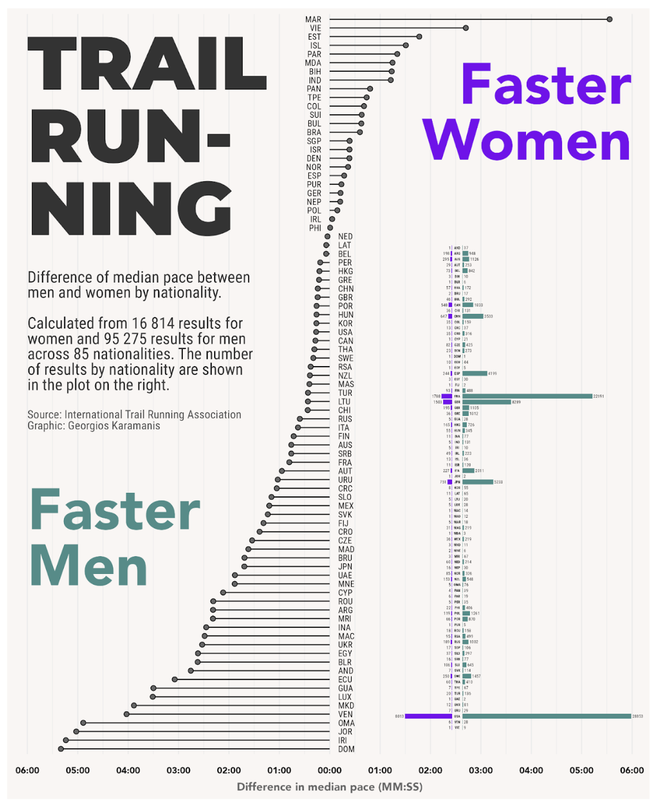

# Load libraries
library(ggplot2)
library(dplyr)
library(showtext)
library(ggtext)
# Add font
font_add_google("Lilita One", family = "Lilita")
showtext_auto() # Needed to show the text
# Read in data
breakouts <- read.csv("BreakoutsMay30_copy.csv")
# Filter to include only the first 30 data points
breakouts <- breakouts %>%
filter(treatment_day <= 30)
# Assign colors based on phase of cycle
breakouts <- breakouts %>%
mutate(color = case_when(
treatment_day <= 6 ~ "#f7bfbe", # period days
treatment_day >= 7 & treatment_day <= 13 ~ "#83c53f", # follicular
treatment_day == 14 ~ "#f8bb6c", # ovulation
TRUE ~ "#2596be" # luteal
))
# Plotting
ggplot(breakouts, #data
aes(x = treatment_day, #x axis
y = pimples, # y axis
color = color)) + #assign colors based on values above
geom_segment(aes( #line segment type geom
xend = treatment_day, # one segment for each treatment day
yend = 0), #all convege at 0
size = 1) + #line width
geom_point(size = 2) + # Add points at the end of each segment
scale_x_continuous() +
coord_polar(start = 0) + #m make the segments into a circle
scale_color_identity() + # Use colors as they are specified
expand_limits(x = c(0, 30), y = c(0, max(breakouts$pimples) + 2)) + # Ensure
#enough space around the plot
theme_minimal() +
theme(
#although not using the titles, need to have the code so the margins are big enough
#to add the title to where I want below
axis.title.x = element_blank(), # no x axis title
axis.title.y = element_blank(), # no y axis title
panel.grid.major = element_blank(), # gets rid of y axis gridlines
panel.grid.minor = element_blank(), # gets rid of x axis gridlines
axis.text.x = element_blank(), # Remove x-axis numbers
axis.text.y = element_blank(), # Remove y-axis numbers
panel.background = element_rect(
fill = "#ffefd5", # add fill color
color = "#ffefd5"), #border color is the same
plot.background = element_rect(
fill = "#ffefd5",#background color of entire plot
color = NA), #no
panel.border = element_blank(), # Remove panel border
plot.margin = margin(-4, -4, -4, -4, "cm") # Add margins around the plot
) +
#keepign labs to preserve spacing even though not used to display text
labs(title = "",
subtitle = "",
caption = "") +
#add cycle labels
annotate("text", #text type of annotation
x = 3, #x coordinate for placement
y = max(breakouts$pimples) + 1, #placed above data
label = "Period", #title
color = "#f7bfbe", #color
size = 5, #font size
angle = 0, #horizontal
hjust = 1, #right text alignment
family = "Lilita") +
annotate("text",
x = 9,
y = max(breakouts$pimples),
label = "Follicular",
color = "#83c53f",
size = 5,
angle = 0,
hjust = 0, #left text alignmnet
family = "Lilita") +
annotate("text",
x = 12,
y = max(breakouts$pimples)-4,
label = "Ovulation",
color = "#f8bb6c",
size = 5,
angle = 0,
hjust = 0,
family = "Lilita") +
annotate("text",
x = 20,
y = max(breakouts$pimples) - 8,
label = "Luteal",
color = "#2596be",
size = 5,
angle = 0,
hjust = 1,
family = "Lilita") +
geom_richtext(
aes(x = 25, #changes vertically
y = 24), #changes horizontally
# label is the title of the figure, using this format for more customization
label =
"<b style='color:#d82349;font-size: 40pt;'>Breakouts</b><br>
<span style='font-size: 12pt; color:#d82349
'>throughout my</span><br><span style='font-size: 40pt;
color:#d82349'>Cycle</span>",
hjust = 0.5, #center horizontally
vjust = 0.5, #center vertically
fill = alpha("#ffefd5", 0), # Transparent fill
label.color = NA, # Remove border around the text box
family = "Lilita") #font Advanced Data Visualization
Choose your own assignment - Advanced data visualization
Selected Visualizations
The Great American Coffee Taste Test
 The first visualization I like is by the creator Nicola Rennie in her TidyTuesday repository. The title is “The Great American Coffee Taste Test,” and it shows which coffees were preferred by people who participated in the survey. It is essentially a bar graph that shows the percent of people who preferred each type of coffee, but the “bar” is a coffee cup that is proportionally full to what percentage of people liked it.
The first visualization I like is by the creator Nicola Rennie in her TidyTuesday repository. The title is “The Great American Coffee Taste Test,” and it shows which coffees were preferred by people who participated in the survey. It is essentially a bar graph that shows the percent of people who preferred each type of coffee, but the “bar” is a coffee cup that is proportionally full to what percentage of people liked it.
Packages used:
Tidyverse - used to create the base of visualizations
Showtext - adds more fonts
Patchwork - combines multiple ggplots into one plot
Camcorder - records the making of the visualization so she can make a gif out of it
Ggtext - allows for rich text formatting
nrBrand - allows for branding (more consistent themes)
Glue - used to create the coffee icon in the color that she wants and create a template phrase with data placeholders
She did some data wrangling which included creating the coffee cup icon and processing the survey data to count the number of times certain coffees were preferred and then calculating a percent from that. The geoms used were geom_textbox, which adds text boxes to ggplots for the caption and geom_rect to create a bar-like visualization within the coffee cups. The data itself includes information about each particilants coffee drinking preferences in general, like what their favorite drink is and where they usually get their coffee from, and then which of the four coffee types were their favorite. You can find her code here.
Trail Running
The second visualization I like is by Georgios Karamanis in their TidyTuesday repository. This visualization displays the difference in median trail running pace between men and women by nationality. The packaged used are tidyverse, camcorder, patchwork, and colorspace, which the first three being used in the same way as they were for the first visualization. The colorspace package is used to manipulate colors more easily such as changing saturation and mix colors. To clean the data, they did a series of pipes to filter for the data they need and calculate the median pace by nationality and gender. The final dataframe has the name of the runner, their age, nationality, time, and gender. The geoms used are geom_segment, which creates the lines for the difference in mean pace, geom_point, which is added to the end of each segment to create the “lollipop” shape, geom_text to add captions and labels, and geom_rect, to create the bar-like chart on the right. Here is a link to their code.
Washington Trails
The third visualization I like is from Ijeamaka Anyene’s TidyTuesday repository which uses survey data to highlight which trail features appear more frequently on five-star trails. The packages used to make this visualization are ggplot2, stringr, dplyr, tidyr, ggtext, and ggimage. These R packages collectively enable advanced data manipulation (dplyr, tidyr), string operations (stringr), and creation of sophisticated and richly formatted visualizations (ggplot2, ggtext, ggimage). To clean the data, she filtered for only 5 star ratings, then split those up into which features were present, and then counted which features occurred most often. The final dataset has the names of the five-star rated trails and the features each of those trails have. The geoms used in this visualization are geom_text to more easily add captions and labels and geom_segment in a circular shape to create the percentage visualization for each feature. Here is a link to their code.
Sketch
Final Visualization
Process
My visualization displays the number of breakouts throughout one of my menstrual cycles. Each spoke is one day of my cycle; the radius corresponds to the number of breakouts on that day. To start my coding process, I had to clean my data slightly, by confining it to only once cycle (which for me, was 30 days). I then assigned each part of my cycle a different color before starting the visualization. To plot, I used ggplot and used the geoms geom_segment and geom_point. I borrowed this idea from the trail running plot which used that combo to get the “lollipop” - like data. I then took inspiration from the Washington Trails plot to make my data display in a circular shape, using the coord_polar call. I spent a lot of time customizing the theme, changing the color of the background, figuring out how to import custom fonts, and adjusting the margins of the figure. I used annotate to add the description labels to each part of my cycle, and geom_richtext to add the title of my figure. Overall, my figures shows that throughout my menstrual cycle, I tend to have less breakouts in the second half.